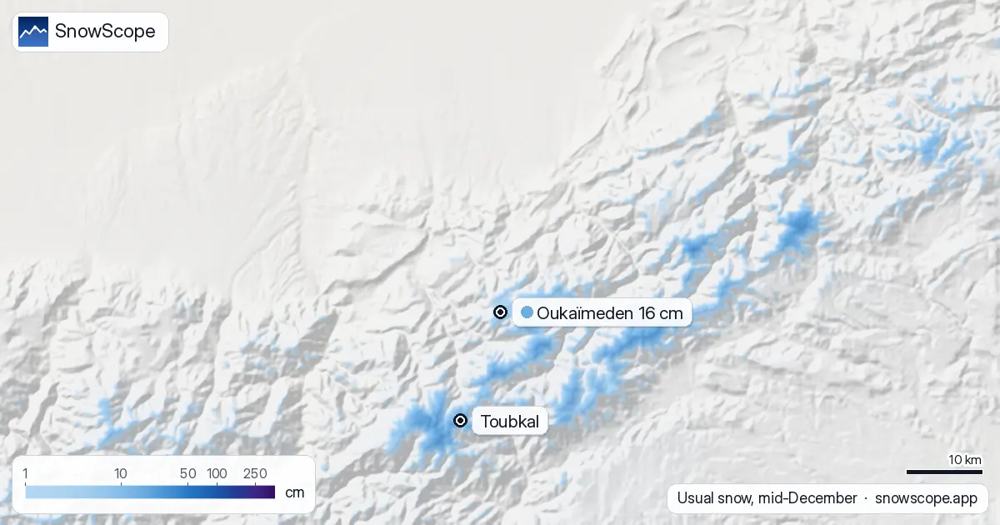
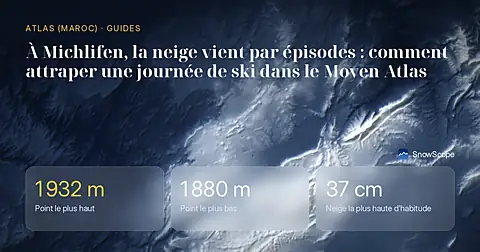
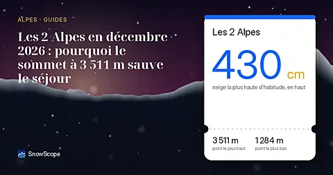

Oukaïmeden en décembre : vos vraies chances de neige, d'après 46 hivers
Peut-on skier à Oukaïmeden en décembre ? Parfois, et notre historique de 46 hivers dit à quel point. À mi-pente, vers 2929 m, un hiver typique n'a que 16 cm de neige le 15 décembre, et seulement 11 % des hivers y ont dépassé 50 cm à cette date.
Consultez les prévisions neige en temps réel pour Oukaimden ski resort sur l'application SnowScopeHauteurs de neige, alertes poudreuse et carte 3D, gratuitement.
Trois altitudes, trois réalités proches
Nous suivons Oukaïmeden à trois altitudes : 2600 m en bas, 2929 m à mi-pente et 3258 m au sommet. En décembre, l'écart entre elles est faible : le 15 décembre, un hiver typique donne 15 cm en bas, 16 cm à mi-pente et 17 cm au sommet. Dans l'Atlas, c'est la tempête qui fait la saison, pas l'altitude seule.
La première neige durable arrive en général vers le 5 novembre, mais elle fond souvent entre deux épisodes.

Date par date
Le 1er décembre, un hiver typique a 12 cm à mi-pente, et dans 28 % des hivers la pente est presque nue (moins de 5 cm). Le 15 décembre : 16 cm, 20 % d'hivers presque sans neige, 43 % avec au moins 25 cm. Le 25 décembre : 20 cm, avec 41 % d'hivers à 25 cm ou plus. Le 31 décembre : 24 cm, et 48 % des hivers passent 25 cm.
Le seuil de 50 cm, celui d'une vraie base de ski, reste rare : 11 % des hivers le 15 décembre à mi-pente, 15 % le 31 décembre. Au sommet, c'est 15 % puis 20 %.

Semaine par semaine
Si l'on regarde les semaines où la neige moyenne atteint 50 cm à mi-pente, la part des hivers est de 4 % pour la semaine du 30 novembre au 6 décembre, 13 % pour celle du 7 au 13 décembre, 11 % du 14 au 20 et 13 % du 21 au 27. Autrement dit, une semaine de ski garantie en décembre n'existe pas ici. Un bon week-end, si.
Un gros décembre, ça arrive
Un décembre généreux, celui d'un hiver sur dix, donne 50 cm à mi-pente le 15 décembre et 53 cm à Noël. L'hiver dernier en est la preuve : 33 cm à mi-pente le 15 décembre 2025, puis 78 cm le jour de Noël, avant un pic de 132 cm et 149 jours de neige sur la saison.
Côté tendance, rien de spectaculaire : 14 cm à mi-pente le 15 décembre dans un hiver typique des 15 premiers hivers (1980-81 à 1994-95), 11 cm dans les 15 derniers (2011-12 à 2025-26), avec 40 % d'hivers au-dessus de 25 cm dans les deux périodes.
Et cette année ?
À la mi-novembre, notre carte montre 0 cm aux trois altitudes, et rien n'est attendu dans les sept prochains jours. Ce n'est pas inquiétant en soi : novembre est presque toujours maigre ici. La saison culmine en mars, avec 53 cm à mi-pente dans un hiver typique.
Conseils aux skieurs
- Ne réservez pas un séjour de décembre longtemps à l'avance : attendez une tempête et partez dans les jours qui suivent.
- Regardez notre carte de neige la veille : en décembre, la différence entre une pente nue et une journée de ski tient souvent à un seul épisode.
- L'ouverture des remontées dépend de la station, pas seulement de la neige : renseignez-vous sur place.
- Neige fine en début de saison : les pierres sont proches, restez sur les pistes damées.
Références et crédits
- Wikipedia, Oukaïmeden (read 13 November 2026) en.wikipedia.org/wiki/Ouka%C3%AFmeden
- OpenSkiMap (mapped lifts and runs) openskimap.org/
À propos de ces chiffres
Chiffres de neige : historique SnowScope, 46 hivers passés (1980-81 à 2025-26) aux altitudes indiquées (bas, mi-pente, sommet), une reconstitution de la neige passée pour une zone, corrigée de l'altitude (base ERA5-Land ; Snow_Hydro 1 km pour le Maroc), pas les bulletins de la station. Neige actuelle : la carte SnowScope. Remontées, pistes et altitudes : cartographie OpenSkiMap. Prix : les pages officielles listées ci-dessous, consultées le 13 novembre 2026 ; les prix dynamiques varient avec la date et la demande.
Citer ce bulletin
Pour la recherche, l'enseignement ou la presse : chiffres et graphiques réutilisables librement sous CC BY 4.0 avec cette citation.
SnowScope (2026), Oukaïmeden en décembre : vos vraies chances de neige, d'après 46 hivers, https://snowscope.app/blog/fr/2026/11/oukaimeden-decembre-chances-de-neige-46-hivers.html, consulté le 2026-11-14
SnowScope (Atlas Labs). (2026, November 14). Oukaïmeden en décembre : vos vraies chances de neige, d'après 46 hivers. SnowScope snow reports. https://snowscope.app/blog/fr/2026/11/oukaimeden-decembre-chances-de-neige-46-hivers.html
BibTeX
@misc{snowscope2026oukaimedendecembrechance,
author = {{SnowScope (Atlas Labs)}},
title = {Oukaïmeden en décembre : vos vraies chances de neige, d'après 46 hivers},
year = {2026},
month = nov,
howpublished = {\url{https://snowscope.app/blog/fr/2026/11/oukaimeden-decembre-chances-de-neige-46-hivers.html}},
note = {Published 2026-11-14 13:29 UTC; accessed 2026-11-14}
}· CC BY 4.0 · Méthodes, données et outils →
Suivre Oukaimden ski resort
Gratuit : un message quand la neige arrive, et la météo chaque matin.
Autres bulletins neige

Michlifen, près d'Ifrane, a de la neige par courts épisodes plutôt qu'une saison. Ce que montrent 46 hivers passés, pourquoi la hauteur habituelle est nulle, et comment être là les bons jours.

Chances de neige en décembre sur 46 hivers et prix journaliers vérifiés : Ski Cooper 49 $, Les 3 Vallées 75,70 €, Oukaïmeden sans tarif officiel. Là où une journée de ski pas chère en décembre fonctionne.

Les 2 Alpes culmine à 3 511 m pour de la neige abondante en décembre 2026, avec un forfait adulte 6 jours à 266,50 EUR.